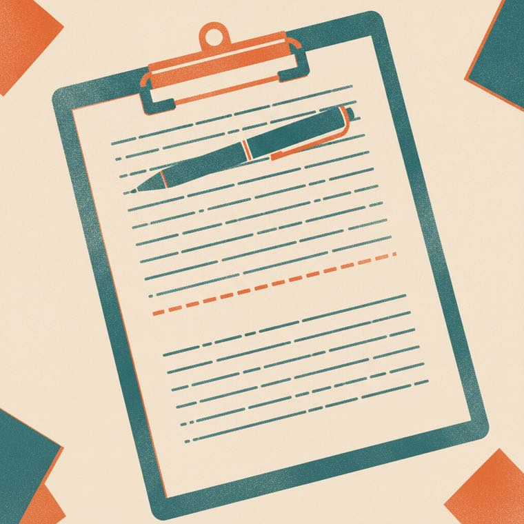

We built a screen. But the call happens at a desk and the handoff happens on the street, and we had quietly assumed those were the same place.
So the page also prints a blank. You run a stack before your shift and fill one in with a pen while standing with someone. Stations get circled, not copied out, so an address cannot be written down wrong.
